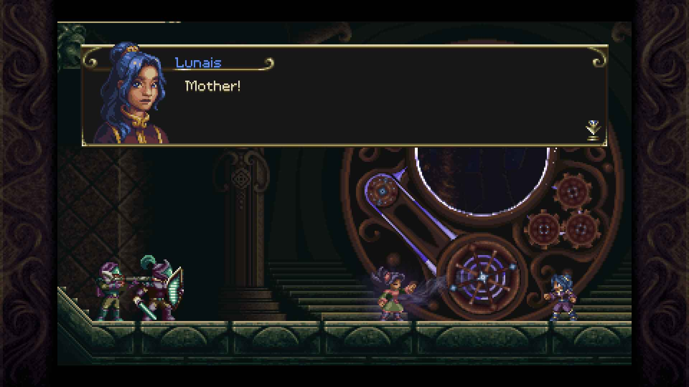
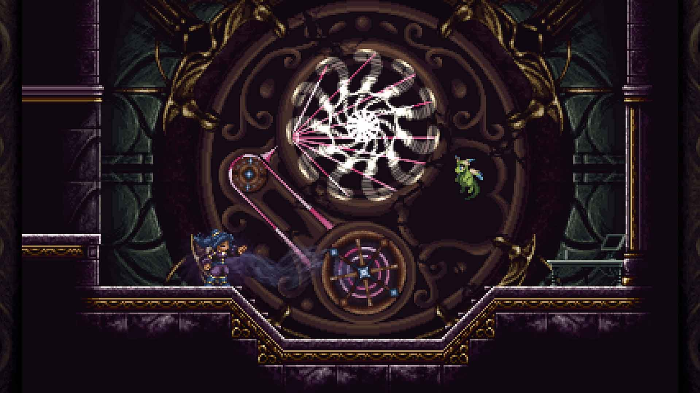
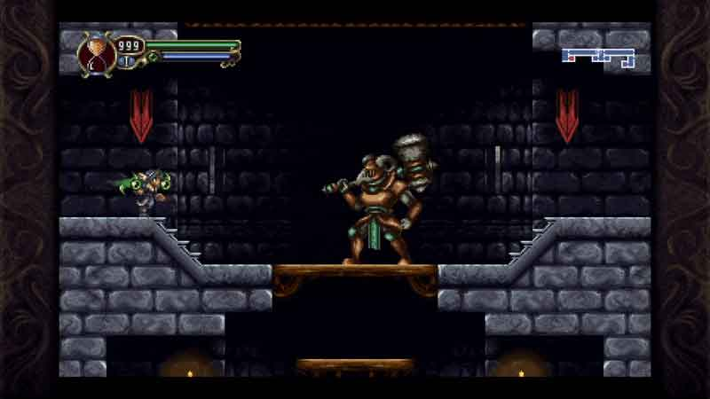
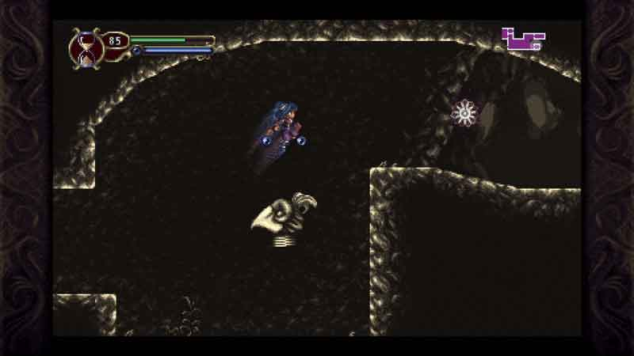
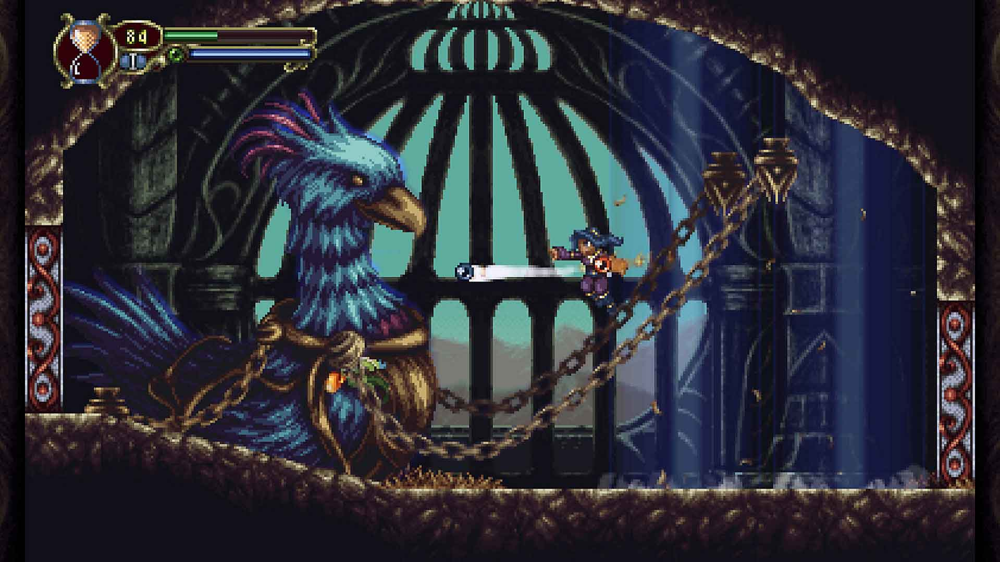
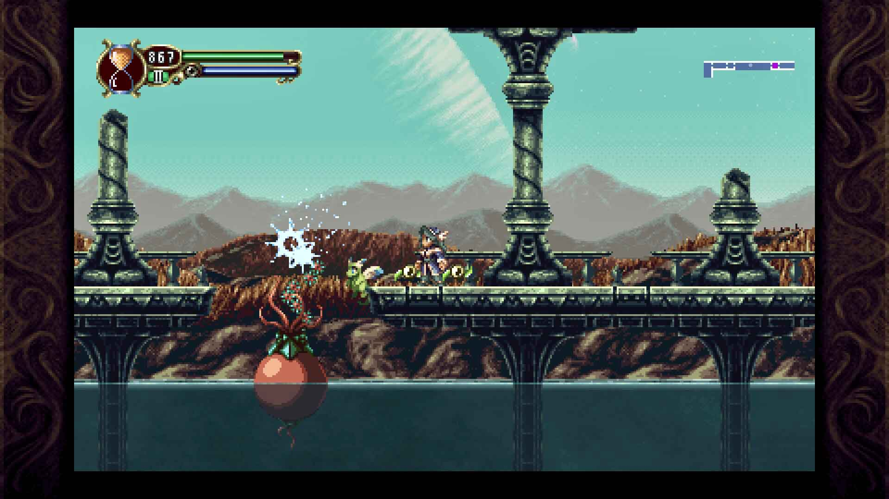

Timespinner
On the planet of Winderia, a colony of the empire of Lachiem, Emperor Nuvius is looking for the Timespinner, an ancient device capable of sending its user back in time. The Qaelans, original inhabitants of Winderia, are the protectors and keepers of the Timespinner. Sending back into the time a clan member each generation, they make sure their clan is always aware of any imminent dangers.
We will take on the role of Lunais, a member of the Qaelans and chosen time traveler. During her farewell party, the empire finds the clan hideout. Lunais is therefore forced to flee together with her mother Selen and quickly use the Timespinner. Emperor Nuvius, in the attempt to stop them, kills Selen while she uses the temporal device.
Thus the Timespinner is destroyed, while Lunais find herself into an unknown world that will turn out to be Lachiem, the capital of the empire and swears revenge against its emperor. During her adventure, she will get the ability to travel between the present and a thousand years distant past.

I want to start mentioning a couple of aspects of the game that
I found particularly well made and that I found pretty
interesting.
The first one is the themes the game discusses. The game events
in fact force the characters to ask themself if what they have
always believed in is right or wrong. For example, some
characters question their society and the hierarchical order
that is constituted of, wondering if it is okay to feel superior
to an individual belonging to a lower class. Others question the
war they are fighting and the reasons behind it.
The second aspect that I want to mention is the collectables. They have the function to expand the lore further. Most players - me in particular - do not read all the various notes or additional info that can be found inside a video-game. But I have to say that those I found in Timespinner are particularly interesting. They are letters or notes written by some NPCs and they are capable, in their brevity, to outline the personalities and the feelings of those NPCs and make us understand the reasons behind their actions and behind what is happening around us.
Castlevania: Sand of Time
The gameplay is really similar to Castlevania: to Symphony of the Night in several aspects. There are GDR elements like levelling up by killing enemies, modify the equipment to increase the statistics and the increasing ability of the enemies with continuation of the adventure.
The attack is no longer carried out with swords or whips as in Castlevania, but through the protagonist's Aura powers. The latter are of different types: some of these, like spheres of fire, allow us to carry out attacks at a distance, others take the form of weapons such as hammers or swords and perform powerful melee attacks. Each of these energy spheres, called Orbs, has its own level, which is separate from the level of the protagonist. They also have a type that allows us to do more damage to enemies weak to that exact one. We'll find some Orbs on our main path, others instead will require some backtracking or are hidden in secret rooms behind destructible walls.
 In addition to the basic attack with the Orbs, we have a powerful magical attack that uses our Magic Points. These powers, which are one for each type of Orb, share the level with the Orbs. We don't get them at the same time as the Orbs but we will have to buy them later.
Another aspect inherited by SOTN is the familiars. These are small in number and have their own level, which increases with their use. Unfortunately, having all of them a separate level makes the use of any other familiar beside the first one counterproductive. In particular, the first one we obtain always have the highest LV and so is always much stronger than the others. In addition, we can only get a couple of these familiars in the last few moments of the adventure.
As in Sotn, as the adventure continues we will get relics, objects that will provide us with skills useful to reach previously inaccessible areas. In particular, we will get the classic double jump, the ability to swim underwater, the slide and some others. A mechanic that distinguishes the game from Sotn and other Metroidvania is stopping time mechanic. Thanks to a piece of the Timespinner we will in fact be able to stop the time in order to avoid attacks or use the enemies as platforms. The usage of this skill is linked to use of the sands of time, a resource easily obtainable from the lanterns scattered throughout the game world.
The game can be played at 3 different difficulties and there is also a NewGame+ that will make us restart the adventure with all the Orbs, all the skills and all the equipment we obtained previously. Played on normal difficulty Timespinner is quite an easy challenge with some rare difficulty peaks. It is basically possible to defeat all the bosses simply spamming magic attacks. Maybe a greater consumption of MP with their use would have made the boss fights more exciting and the whole game more challenging.
The are four different endings: two are intermediate endings and are "True ending". We can get 3 of them in a single run, while a second run is necessary to get the fourth. It takes about 8 hours to get to the credits completing the game at 100%, while playing the game in NG+ mode is significantly quicker.
Aspect and visual
Artistically Timespinner is well made. There are no scenarios of incredible beauty, but all of them are well crafted and pleasant to see. There is a good variety in the settings, ranging from forests and caves, to castles, and libraries laboratories. The design of the enemies is also well done and various, with only a few enemies that are copies of others with just a few different details. Bosses are a lot different from each other even if some are a little more inspired of others in design. Finally the soundtrack composed by Jeff Ball is brilliant, with the presence of some classical / gothic elements.

Final Thoughts
If you loved Castlevania: Symphony of the Night like I did and you consider it one of your favourite games ever, then Timespinner is the perfect game for you. With a nice 32-bit pixel art design, precise and smooth gameplay and a compelling story, the game manages to carve out a small space in the numerous panorama of the Metroidvania. It does not invent, nor innovates anything, rather it inherits several of its aspects from Sotn, but every aspect of it is well made. Funs of the genre will surely be happy to have explored the little universe of Timespinner and lived the story of Lunais.
V-SCORE 8